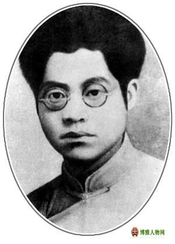
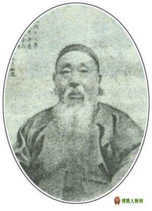
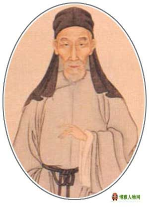
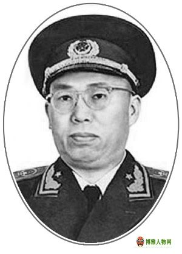

自古以来，衡阳文气郁郁，才俊辈出。古有辅佐蜀国的大臣蒋婉、创造造纸术的蔡伦、著名思想家王夫之（王船山）、湘军水师统帅彭玉麟等等。
北宋时周敦颐的《太极图说》始开理学之说，对探索宇宙之本源提出了很重要的观点，也对湖湘学派的形成发展影响深远。
湖湘学派是宋明理学四大学派之一，湖南文化的崛起无不与湖湘学派的流播和受湖湘文化的哺育有着重要的渊源。
明末清初，王夫之（王船山，字而农）与顾炎武、黄宗羲合成三大思想家，其人格中所体现出浓厚的民族意识，对后人影响深刻。
“脚穿木屐，手撑油伞”头不顶清（满清）天，脚不踩清土的文人形象，生动的表明自己明朝汉人情怀。
谭嗣同称其为“五百年来学者，真通天下之故者，船山一人而已。”称赞其思想“空绝千古”。
故人已逝，现今留存衡阳县曲兰乡湘西村菜塘湾的“湘西草堂”以及大罗山的“王夫之墓”供人瞻顾

诗人萧三回忆说：“夏明翰同志党性很纯洁，没有一点花招，扎扎实实，不说假话。要说他的性格、脾气，四句诗完全可以代表，是真心话，没有做作，很难得的就是他这言行一致。”

曾熙初字嗣元，更字子缉、季子，号俟园，晚号农髯，山海楼主人。衡永郴桂道衡州府衡阳县（今衡阳市衡阳县石市乡石狮村）人。出生于衡阳县石市乡石狮村，逝世于上海，归葬于衡阳市衡阳县石市乡岘塘村。中国杰出的书法家、画家、教育家，海派书画领军人物。

王夫之，字而农，号姜斋、又号夕堂，湖广衡州府衡阳县（今湖南衡阳）人。他与顾炎武、黄宗羲并称明清之际三大思想家。其著有《周易外传》、《黄书》、《尚书引义》、《永历实录》、《春秋世论》、《噩梦》、《读通鉴论》、《宋论》等书。

罗荣桓（1902-1963） 久经考验的忠诚的共产主义战士，坚定的马克思主义者，伟大的无产阶级革命家、政治家、军事家，中国人民解放军和中华人民共和国缔造者之一，中国人民解放军政治工作奠基人，中华人民共和国元帅，党、国家和军队卓越领导人。